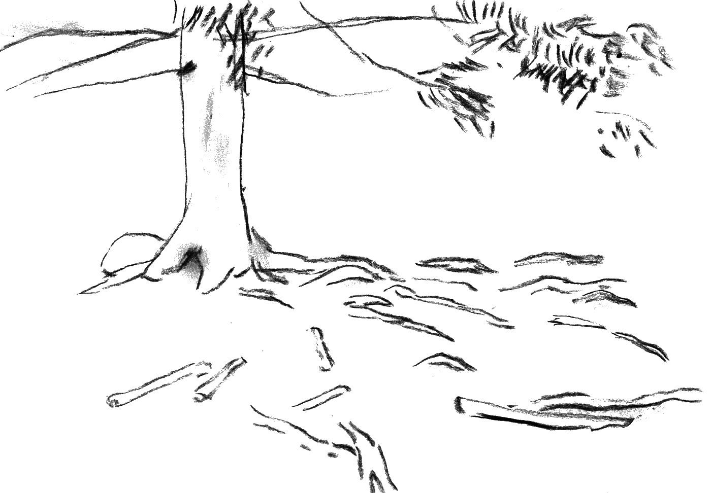

nature
forest management
The closest translations for metsänhoito are forestry or forest management. However, the latter part of the finnish word — hoito — can also be translated as care or nurture. Does the forest need care or nurture? For what? What was the state of the forests before we looked after them?
Certain measures can enhance the growth of a forest and thus accelerate the natural sequestration of carbon.
After meeting the Finnish president Sauli Niinistö, Donald Trump got the impression that forest fires in Finland are prevented by raking and cleaning the forest beds, which is not quite how forest management is done.